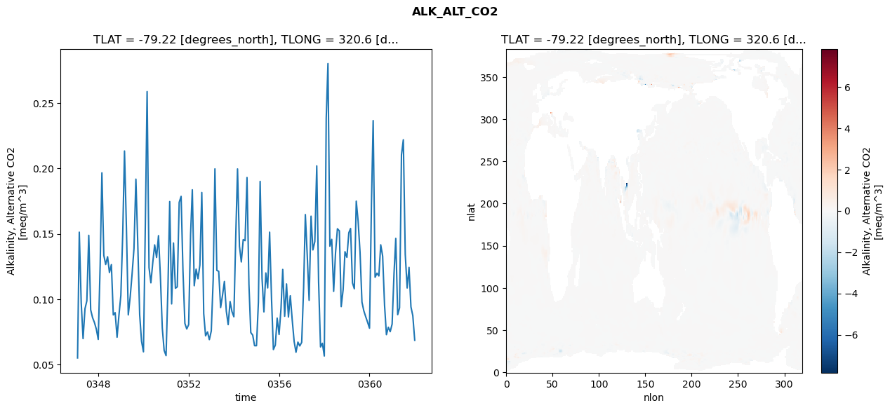
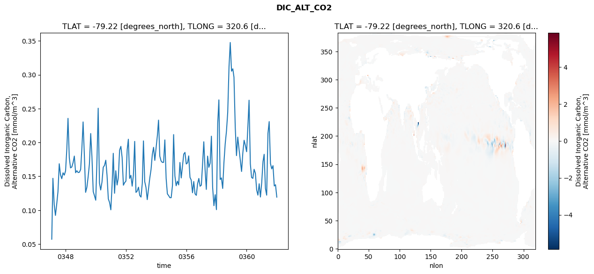
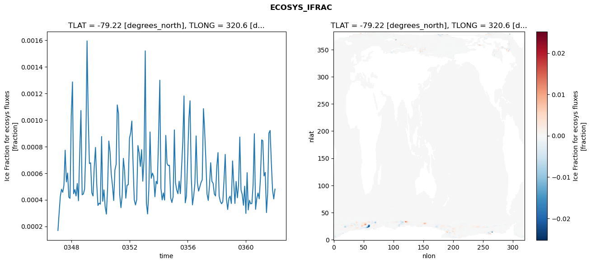
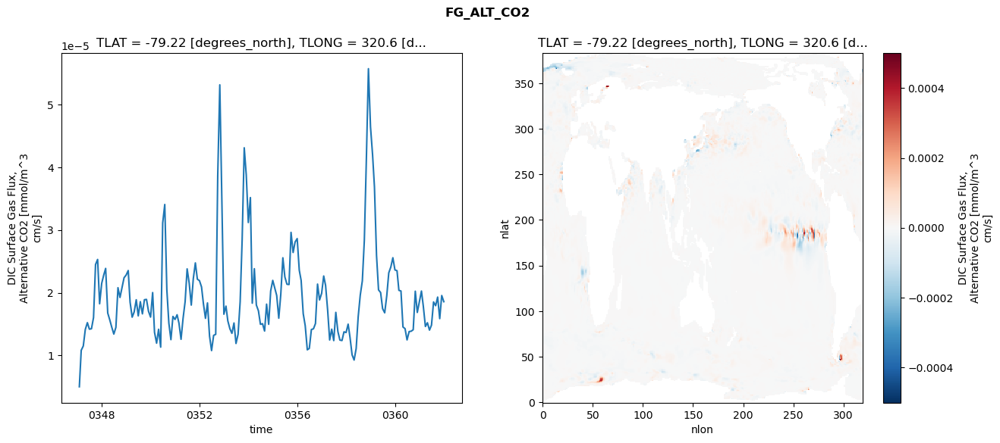

glb-dor_North_Atlantic_basin_022_1999-01-01_00088#
Simulation details#
Case: smyle.cdr-atlas-v0.glb-dor_North_Atlantic_basin_022_1999-01-01_00088.001
Basin: North_Atlantic_basin
Polygon: 22.0
Start date: 1999-01
Show code cell source Hide code cell source
import xarray as xr
import matplotlib.pyplot as plt
Show code cell source Hide code cell source
zarr_store = "/path/to/zarr/store"
# Parameters
zarr_store = "/global/cfs/projectdirs/m4746/Projects/Ocean-CDR-Atlas-v0/data/validation/smyle.cdr-atlas-v0.glb-dor_North_Atlantic_basin_022_1999-01-01_00088.001.validation.zarr"
Show code cell source Hide code cell source
%%time
ds_o = xr.open_zarr(zarr_store).compute()
ds_o
CPU times: user 725 ms, sys: 490 ms, total: 1.22 s
Wall time: 1.5 s
<xarray.Dataset> Size: 2MB
Dimensions: (nlat: 384, nlon: 320, time: 180)
Coordinates:
TLAT float64 8B -79.22
TLONG float64 8B 320.6
ULAT float64 8B -78.95
ULONG float64 8B 321.1
* time (time) object 1kB 0347-02-01 00:00:00 ... 0362-01-01 0...
z_t float32 4B 500.0
Dimensions without coordinates: nlat, nlon
Data variables:
ALK_ALT_CO2_diff (nlat, nlon) float32 492kB nan nan nan ... nan nan nan
ALK_ALT_CO2_rmse (time) float64 1kB 0.05495 0.1513 ... 0.08733 0.06846
DIC_ALT_CO2_diff (nlat, nlon) float32 492kB nan nan nan ... nan nan nan
DIC_ALT_CO2_rmse (time) float64 1kB 0.05713 0.1471 ... 0.1376 0.1193
ECOSYS_IFRAC_diff (nlat, nlon) float32 492kB nan nan nan ... nan nan nan
ECOSYS_IFRAC_rmse (time) float64 1kB 0.0001687 0.0002945 ... 0.0004802
FG_ALT_CO2_diff (nlat, nlon) float32 492kB nan nan nan ... nan nan nan
FG_ALT_CO2_rmse (time) float64 1kB 5.007e-06 1.081e-05 ... 1.856e-05xarray.Dataset
- nlat: 384
- nlon: 320
- time: 180
- TLAT()float64-79.22
- long_name :
- array of t-grid latitudes
- units :
- degrees_north
array(-79.22052261)
- TLONG()float64320.6
- long_name :
- array of t-grid longitudes
- units :
- degrees_east
array(320.56250892)
- ULAT()float64-78.95
- long_name :
- array of u-grid latitudes
- units :
- degrees_north
array(-78.95289509)
- ULONG()float64321.1
- long_name :
- array of u-grid longitudes
- units :
- degrees_east
array(321.12500894)
- time(time)object0347-02-01 00:00:00 ... 0362-01-...
- bounds :
- time_bound
- long_name :
- time
array([cftime.DatetimeNoLeap(347, 2, 1, 0, 0, 0, 0, has_year_zero=True), cftime.DatetimeNoLeap(347, 3, 1, 0, 0, 0, 0, has_year_zero=True), cftime.DatetimeNoLeap(347, 4, 1, 0, 0, 0, 0, has_year_zero=True), cftime.DatetimeNoLeap(347, 5, 1, 0, 0, 0, 0, has_year_zero=True), cftime.DatetimeNoLeap(347, 6, 1, 0, 0, 0, 0, has_year_zero=True), cftime.DatetimeNoLeap(347, 7, 1, 0, 0, 0, 0, has_year_zero=True), cftime.DatetimeNoLeap(347, 8, 1, 0, 0, 0, 0, has_year_zero=True), cftime.DatetimeNoLeap(347, 9, 1, 0, 0, 0, 0, has_year_zero=True), cftime.DatetimeNoLeap(347, 10, 1, 0, 0, 0, 0, has_year_zero=True), cftime.DatetimeNoLeap(347, 11, 1, 0, 0, 0, 0, has_year_zero=True), cftime.DatetimeNoLeap(347, 12, 1, 0, 0, 0, 0, has_year_zero=True), cftime.DatetimeNoLeap(348, 1, 1, 0, 0, 0, 0, has_year_zero=True), cftime.DatetimeNoLeap(348, 2, 1, 0, 0, 0, 0, has_year_zero=True), cftime.DatetimeNoLeap(348, 3, 1, 0, 0, 0, 0, has_year_zero=True), cftime.DatetimeNoLeap(348, 4, 1, 0, 0, 0, 0, has_year_zero=True), cftime.DatetimeNoLeap(348, 5, 1, 0, 0, 0, 0, has_year_zero=True), cftime.DatetimeNoLeap(348, 6, 1, 0, 0, 0, 0, has_year_zero=True), cftime.DatetimeNoLeap(348, 7, 1, 0, 0, 0, 0, has_year_zero=True), cftime.DatetimeNoLeap(348, 8, 1, 0, 0, 0, 0, has_year_zero=True), cftime.DatetimeNoLeap(348, 9, 1, 0, 0, 0, 0, has_year_zero=True), cftime.DatetimeNoLeap(348, 10, 1, 0, 0, 0, 0, has_year_zero=True), cftime.DatetimeNoLeap(348, 11, 1, 0, 0, 0, 0, has_year_zero=True), cftime.DatetimeNoLeap(348, 12, 1, 0, 0, 0, 0, has_year_zero=True), cftime.DatetimeNoLeap(349, 1, 1, 0, 0, 0, 0, has_year_zero=True), cftime.DatetimeNoLeap(349, 2, 1, 0, 0, 0, 0, has_year_zero=True), cftime.DatetimeNoLeap(349, 3, 1, 0, 0, 0, 0, has_year_zero=True), cftime.DatetimeNoLeap(349, 4, 1, 0, 0, 0, 0, has_year_zero=True), cftime.DatetimeNoLeap(349, 5, 1, 0, 0, 0, 0, has_year_zero=True), cftime.DatetimeNoLeap(349, 6, 1, 0, 0, 0, 0, has_year_zero=True), cftime.DatetimeNoLeap(349, 7, 1, 0, 0, 0, 0, has_year_zero=True), cftime.DatetimeNoLeap(349, 8, 1, 0, 0, 0, 0, has_year_zero=True), cftime.DatetimeNoLeap(349, 9, 1, 0, 0, 0, 0, has_year_zero=True), cftime.DatetimeNoLeap(349, 10, 1, 0, 0, 0, 0, has_year_zero=True), cftime.DatetimeNoLeap(349, 11, 1, 0, 0, 0, 0, has_year_zero=True), cftime.DatetimeNoLeap(349, 12, 1, 0, 0, 0, 0, has_year_zero=True), cftime.DatetimeNoLeap(350, 1, 1, 0, 0, 0, 0, has_year_zero=True), cftime.DatetimeNoLeap(350, 2, 1, 0, 0, 0, 0, has_year_zero=True), cftime.DatetimeNoLeap(350, 3, 1, 0, 0, 0, 0, has_year_zero=True), cftime.DatetimeNoLeap(350, 4, 1, 0, 0, 0, 0, has_year_zero=True), cftime.DatetimeNoLeap(350, 5, 1, 0, 0, 0, 0, has_year_zero=True), cftime.DatetimeNoLeap(350, 6, 1, 0, 0, 0, 0, has_year_zero=True), cftime.DatetimeNoLeap(350, 7, 1, 0, 0, 0, 0, has_year_zero=True), cftime.DatetimeNoLeap(350, 8, 1, 0, 0, 0, 0, has_year_zero=True), cftime.DatetimeNoLeap(350, 9, 1, 0, 0, 0, 0, has_year_zero=True), cftime.DatetimeNoLeap(350, 10, 1, 0, 0, 0, 0, has_year_zero=True), cftime.DatetimeNoLeap(350, 11, 1, 0, 0, 0, 0, has_year_zero=True), cftime.DatetimeNoLeap(350, 12, 1, 0, 0, 0, 0, has_year_zero=True), cftime.DatetimeNoLeap(351, 1, 1, 0, 0, 0, 0, has_year_zero=True), cftime.DatetimeNoLeap(351, 2, 1, 0, 0, 0, 0, has_year_zero=True), cftime.DatetimeNoLeap(351, 3, 1, 0, 0, 0, 0, has_year_zero=True), cftime.DatetimeNoLeap(351, 4, 1, 0, 0, 0, 0, has_year_zero=True), cftime.DatetimeNoLeap(351, 5, 1, 0, 0, 0, 0, has_year_zero=True), cftime.DatetimeNoLeap(351, 6, 1, 0, 0, 0, 0, has_year_zero=True), cftime.DatetimeNoLeap(351, 7, 1, 0, 0, 0, 0, has_year_zero=True), cftime.DatetimeNoLeap(351, 8, 1, 0, 0, 0, 0, has_year_zero=True), cftime.DatetimeNoLeap(351, 9, 1, 0, 0, 0, 0, has_year_zero=True), cftime.DatetimeNoLeap(351, 10, 1, 0, 0, 0, 0, has_year_zero=True), cftime.DatetimeNoLeap(351, 11, 1, 0, 0, 0, 0, has_year_zero=True), cftime.DatetimeNoLeap(351, 12, 1, 0, 0, 0, 0, has_year_zero=True), cftime.DatetimeNoLeap(352, 1, 1, 0, 0, 0, 0, has_year_zero=True), cftime.DatetimeNoLeap(352, 2, 1, 0, 0, 0, 0, has_year_zero=True), cftime.DatetimeNoLeap(352, 3, 1, 0, 0, 0, 0, has_year_zero=True), cftime.DatetimeNoLeap(352, 4, 1, 0, 0, 0, 0, has_year_zero=True), cftime.DatetimeNoLeap(352, 5, 1, 0, 0, 0, 0, has_year_zero=True), cftime.DatetimeNoLeap(352, 6, 1, 0, 0, 0, 0, has_year_zero=True), cftime.DatetimeNoLeap(352, 7, 1, 0, 0, 0, 0, has_year_zero=True), cftime.DatetimeNoLeap(352, 8, 1, 0, 0, 0, 0, has_year_zero=True), cftime.DatetimeNoLeap(352, 9, 1, 0, 0, 0, 0, has_year_zero=True), cftime.DatetimeNoLeap(352, 10, 1, 0, 0, 0, 0, has_year_zero=True), cftime.DatetimeNoLeap(352, 11, 1, 0, 0, 0, 0, has_year_zero=True), cftime.DatetimeNoLeap(352, 12, 1, 0, 0, 0, 0, has_year_zero=True), cftime.DatetimeNoLeap(353, 1, 1, 0, 0, 0, 0, has_year_zero=True), cftime.DatetimeNoLeap(353, 2, 1, 0, 0, 0, 0, has_year_zero=True), cftime.DatetimeNoLeap(353, 3, 1, 0, 0, 0, 0, has_year_zero=True), cftime.DatetimeNoLeap(353, 4, 1, 0, 0, 0, 0, has_year_zero=True), cftime.DatetimeNoLeap(353, 5, 1, 0, 0, 0, 0, has_year_zero=True), cftime.DatetimeNoLeap(353, 6, 1, 0, 0, 0, 0, has_year_zero=True), cftime.DatetimeNoLeap(353, 7, 1, 0, 0, 0, 0, has_year_zero=True), cftime.DatetimeNoLeap(353, 8, 1, 0, 0, 0, 0, has_year_zero=True), cftime.DatetimeNoLeap(353, 9, 1, 0, 0, 0, 0, has_year_zero=True), cftime.DatetimeNoLeap(353, 10, 1, 0, 0, 0, 0, has_year_zero=True), cftime.DatetimeNoLeap(353, 11, 1, 0, 0, 0, 0, has_year_zero=True), cftime.DatetimeNoLeap(353, 12, 1, 0, 0, 0, 0, has_year_zero=True), cftime.DatetimeNoLeap(354, 1, 1, 0, 0, 0, 0, has_year_zero=True), cftime.DatetimeNoLeap(354, 2, 1, 0, 0, 0, 0, has_year_zero=True), cftime.DatetimeNoLeap(354, 3, 1, 0, 0, 0, 0, has_year_zero=True), cftime.DatetimeNoLeap(354, 4, 1, 0, 0, 0, 0, has_year_zero=True), cftime.DatetimeNoLeap(354, 5, 1, 0, 0, 0, 0, has_year_zero=True), cftime.DatetimeNoLeap(354, 6, 1, 0, 0, 0, 0, has_year_zero=True), cftime.DatetimeNoLeap(354, 7, 1, 0, 0, 0, 0, has_year_zero=True), cftime.DatetimeNoLeap(354, 8, 1, 0, 0, 0, 0, has_year_zero=True), cftime.DatetimeNoLeap(354, 9, 1, 0, 0, 0, 0, has_year_zero=True), cftime.DatetimeNoLeap(354, 10, 1, 0, 0, 0, 0, has_year_zero=True), cftime.DatetimeNoLeap(354, 11, 1, 0, 0, 0, 0, has_year_zero=True), cftime.DatetimeNoLeap(354, 12, 1, 0, 0, 0, 0, has_year_zero=True), cftime.DatetimeNoLeap(355, 1, 1, 0, 0, 0, 0, has_year_zero=True), cftime.DatetimeNoLeap(355, 2, 1, 0, 0, 0, 0, has_year_zero=True), cftime.DatetimeNoLeap(355, 3, 1, 0, 0, 0, 0, has_year_zero=True), cftime.DatetimeNoLeap(355, 4, 1, 0, 0, 0, 0, has_year_zero=True), cftime.DatetimeNoLeap(355, 5, 1, 0, 0, 0, 0, has_year_zero=True), cftime.DatetimeNoLeap(355, 6, 1, 0, 0, 0, 0, has_year_zero=True), cftime.DatetimeNoLeap(355, 7, 1, 0, 0, 0, 0, has_year_zero=True), cftime.DatetimeNoLeap(355, 8, 1, 0, 0, 0, 0, has_year_zero=True), cftime.DatetimeNoLeap(355, 9, 1, 0, 0, 0, 0, has_year_zero=True), cftime.DatetimeNoLeap(355, 10, 1, 0, 0, 0, 0, has_year_zero=True), cftime.DatetimeNoLeap(355, 11, 1, 0, 0, 0, 0, has_year_zero=True), cftime.DatetimeNoLeap(355, 12, 1, 0, 0, 0, 0, has_year_zero=True), cftime.DatetimeNoLeap(356, 1, 1, 0, 0, 0, 0, has_year_zero=True), cftime.DatetimeNoLeap(356, 2, 1, 0, 0, 0, 0, has_year_zero=True), cftime.DatetimeNoLeap(356, 3, 1, 0, 0, 0, 0, has_year_zero=True), cftime.DatetimeNoLeap(356, 4, 1, 0, 0, 0, 0, has_year_zero=True), cftime.DatetimeNoLeap(356, 5, 1, 0, 0, 0, 0, has_year_zero=True), cftime.DatetimeNoLeap(356, 6, 1, 0, 0, 0, 0, has_year_zero=True), cftime.DatetimeNoLeap(356, 7, 1, 0, 0, 0, 0, has_year_zero=True), cftime.DatetimeNoLeap(356, 8, 1, 0, 0, 0, 0, has_year_zero=True), cftime.DatetimeNoLeap(356, 9, 1, 0, 0, 0, 0, has_year_zero=True), cftime.DatetimeNoLeap(356, 10, 1, 0, 0, 0, 0, has_year_zero=True), cftime.DatetimeNoLeap(356, 11, 1, 0, 0, 0, 0, has_year_zero=True), cftime.DatetimeNoLeap(356, 12, 1, 0, 0, 0, 0, has_year_zero=True), cftime.DatetimeNoLeap(357, 1, 1, 0, 0, 0, 0, has_year_zero=True), cftime.DatetimeNoLeap(357, 2, 1, 0, 0, 0, 0, has_year_zero=True), cftime.DatetimeNoLeap(357, 3, 1, 0, 0, 0, 0, has_year_zero=True), cftime.DatetimeNoLeap(357, 4, 1, 0, 0, 0, 0, has_year_zero=True), cftime.DatetimeNoLeap(357, 5, 1, 0, 0, 0, 0, has_year_zero=True), cftime.DatetimeNoLeap(357, 6, 1, 0, 0, 0, 0, has_year_zero=True), cftime.DatetimeNoLeap(357, 7, 1, 0, 0, 0, 0, has_year_zero=True), cftime.DatetimeNoLeap(357, 8, 1, 0, 0, 0, 0, has_year_zero=True), cftime.DatetimeNoLeap(357, 9, 1, 0, 0, 0, 0, has_year_zero=True), cftime.DatetimeNoLeap(357, 10, 1, 0, 0, 0, 0, has_year_zero=True), cftime.DatetimeNoLeap(357, 11, 1, 0, 0, 0, 0, has_year_zero=True), cftime.DatetimeNoLeap(357, 12, 1, 0, 0, 0, 0, has_year_zero=True), cftime.DatetimeNoLeap(358, 1, 1, 0, 0, 0, 0, has_year_zero=True), cftime.DatetimeNoLeap(358, 2, 1, 0, 0, 0, 0, has_year_zero=True), cftime.DatetimeNoLeap(358, 3, 1, 0, 0, 0, 0, has_year_zero=True), cftime.DatetimeNoLeap(358, 4, 1, 0, 0, 0, 0, has_year_zero=True), cftime.DatetimeNoLeap(358, 5, 1, 0, 0, 0, 0, has_year_zero=True), cftime.DatetimeNoLeap(358, 6, 1, 0, 0, 0, 0, has_year_zero=True), cftime.DatetimeNoLeap(358, 7, 1, 0, 0, 0, 0, has_year_zero=True), cftime.DatetimeNoLeap(358, 8, 1, 0, 0, 0, 0, has_year_zero=True), cftime.DatetimeNoLeap(358, 9, 1, 0, 0, 0, 0, has_year_zero=True), cftime.DatetimeNoLeap(358, 10, 1, 0, 0, 0, 0, has_year_zero=True), cftime.DatetimeNoLeap(358, 11, 1, 0, 0, 0, 0, has_year_zero=True), cftime.DatetimeNoLeap(358, 12, 1, 0, 0, 0, 0, has_year_zero=True), cftime.DatetimeNoLeap(359, 1, 1, 0, 0, 0, 0, has_year_zero=True), cftime.DatetimeNoLeap(359, 2, 1, 0, 0, 0, 0, has_year_zero=True), cftime.DatetimeNoLeap(359, 3, 1, 0, 0, 0, 0, has_year_zero=True), cftime.DatetimeNoLeap(359, 4, 1, 0, 0, 0, 0, has_year_zero=True), cftime.DatetimeNoLeap(359, 5, 1, 0, 0, 0, 0, has_year_zero=True), cftime.DatetimeNoLeap(359, 6, 1, 0, 0, 0, 0, has_year_zero=True), cftime.DatetimeNoLeap(359, 7, 1, 0, 0, 0, 0, has_year_zero=True), cftime.DatetimeNoLeap(359, 8, 1, 0, 0, 0, 0, has_year_zero=True), cftime.DatetimeNoLeap(359, 9, 1, 0, 0, 0, 0, has_year_zero=True), cftime.DatetimeNoLeap(359, 10, 1, 0, 0, 0, 0, has_year_zero=True), cftime.DatetimeNoLeap(359, 11, 1, 0, 0, 0, 0, has_year_zero=True), cftime.DatetimeNoLeap(359, 12, 1, 0, 0, 0, 0, has_year_zero=True), cftime.DatetimeNoLeap(360, 1, 1, 0, 0, 0, 0, has_year_zero=True), cftime.DatetimeNoLeap(360, 2, 1, 0, 0, 0, 0, has_year_zero=True), cftime.DatetimeNoLeap(360, 3, 1, 0, 0, 0, 0, has_year_zero=True), cftime.DatetimeNoLeap(360, 4, 1, 0, 0, 0, 0, has_year_zero=True), cftime.DatetimeNoLeap(360, 5, 1, 0, 0, 0, 0, has_year_zero=True), cftime.DatetimeNoLeap(360, 6, 1, 0, 0, 0, 0, has_year_zero=True), cftime.DatetimeNoLeap(360, 7, 1, 0, 0, 0, 0, has_year_zero=True), cftime.DatetimeNoLeap(360, 8, 1, 0, 0, 0, 0, has_year_zero=True), cftime.DatetimeNoLeap(360, 9, 1, 0, 0, 0, 0, has_year_zero=True), cftime.DatetimeNoLeap(360, 10, 1, 0, 0, 0, 0, has_year_zero=True), cftime.DatetimeNoLeap(360, 11, 1, 0, 0, 0, 0, has_year_zero=True), cftime.DatetimeNoLeap(360, 12, 1, 0, 0, 0, 0, has_year_zero=True), cftime.DatetimeNoLeap(361, 1, 1, 0, 0, 0, 0, has_year_zero=True), cftime.DatetimeNoLeap(361, 2, 1, 0, 0, 0, 0, has_year_zero=True), cftime.DatetimeNoLeap(361, 3, 1, 0, 0, 0, 0, has_year_zero=True), cftime.DatetimeNoLeap(361, 4, 1, 0, 0, 0, 0, has_year_zero=True), cftime.DatetimeNoLeap(361, 5, 1, 0, 0, 0, 0, has_year_zero=True), cftime.DatetimeNoLeap(361, 6, 1, 0, 0, 0, 0, has_year_zero=True), cftime.DatetimeNoLeap(361, 7, 1, 0, 0, 0, 0, has_year_zero=True), cftime.DatetimeNoLeap(361, 8, 1, 0, 0, 0, 0, has_year_zero=True), cftime.DatetimeNoLeap(361, 9, 1, 0, 0, 0, 0, has_year_zero=True), cftime.DatetimeNoLeap(361, 10, 1, 0, 0, 0, 0, has_year_zero=True), cftime.DatetimeNoLeap(361, 11, 1, 0, 0, 0, 0, has_year_zero=True), cftime.DatetimeNoLeap(361, 12, 1, 0, 0, 0, 0, has_year_zero=True), cftime.DatetimeNoLeap(362, 1, 1, 0, 0, 0, 0, has_year_zero=True)], dtype=object) - z_t()float32500.0
- long_name :
- depth from surface to midpoint of layer
- positive :
- down
- units :
- centimeters
- valid_max :
- 537500.0
- valid_min :
- 500.0
array(500., dtype=float32)
- ALK_ALT_CO2_diff(nlat, nlon)float32nan nan nan nan ... nan nan nan nan
- cell_methods :
- time: mean
- grid_loc :
- 3111
- long_name :
- Alkalinity, Alternative CO2
- units :
- meq/m^3
array([[ nan, nan, nan, ..., nan, nan, nan], [ nan, nan, nan, ..., nan, nan, nan], [-0.02514648, -0.02075195, -0.01220703, ..., nan, nan, nan], ..., [ nan, nan, nan, ..., nan, nan, nan], [ nan, nan, nan, ..., nan, nan, nan], [ nan, nan, nan, ..., nan, nan, nan]], dtype=float32) - ALK_ALT_CO2_rmse(time)float640.05495 0.1513 ... 0.08733 0.06846
- cell_methods :
- time: mean
- grid_loc :
- 3111
- long_name :
- Alkalinity, Alternative CO2
- units :
- meq/m^3
array([0.05495202, 0.15126195, 0.09714745, 0.06976341, 0.09262869, 0.09866265, 0.14884583, 0.09175117, 0.08586393, 0.08201402, 0.07700396, 0.06914479, 0.1263876 , 0.19669015, 0.13347722, 0.12653659, 0.13244213, 0.12033756, 0.12639777, 0.08787448, 0.08963547, 0.07081818, 0.08752028, 0.10280091, 0.15098979, 0.21340784, 0.15446735, 0.0879063 , 0.10176721, 0.11892232, 0.1386781 , 0.19184991, 0.1427374 , 0.08798163, 0.06772482, 0.05964522, 0.15944639, 0.25890239, 0.1241295 , 0.11246948, 0.12819407, 0.14150535, 0.13190783, 0.14859261, 0.11797744, 0.07795336, 0.06076333, 0.05672285, 0.10991631, 0.17467106, 0.09633803, 0.14295254, 0.10831643, 0.10939312, 0.17408056, 0.17866998, 0.12175469, 0.08142038, 0.07713318, 0.08045809, 0.14967016, 0.18370309, 0.11024267, 0.1229391 , 0.11561841, 0.1261322 , 0.18162961, 0.08893481, 0.07185972, 0.07489027, 0.06898099, 0.07560354, 0.11500402, 0.19973402, 0.12196845, 0.12130248, 0.09351249, 0.10272 , 0.11351241, 0.0907497 , 0.08044633, 0.09810552, 0.09045124, 0.08644801, 0.14940227, 0.19967765, 0.14054854, 0.12846586, 0.14558304, 0.14476764, 0.19310265, 0.11131224, 0.07439198, 0.07243753, 0.06433461, 0.06430925, 0.09753374, 0.19014175, 0.1157687 , 0.09021111, 0.12002367, 0.10855941, 0.15127531, 0.10024308, 0.06136792, 0.06480057, 0.08544649, 0.07295627, 0.09294142, 0.12271575, 0.08686715, 0.11162436, 0.08627618, 0.10259783, 0.08408443, 0.06758993, 0.05930081, 0.067089 , 0.06414478, 0.06689674, 0.10858029, 0.16472619, 0.13302154, 0.09905188, 0.16349845, 0.13768758, 0.14409009, 0.20200407, 0.11322627, 0.06336363, 0.0661787 , 0.05644412, 0.23847151, 0.28034113, 0.14052281, 0.14576284, 0.10590621, 0.1352002 , 0.15387209, 0.15227352, 0.09427172, 0.10719493, 0.1363016 , 0.1319796 , 0.15079816, 0.15407654, 0.11239182, 0.10791148, 0.17501095, 0.15980873, 0.13591511, 0.09775223, 0.09103075, 0.08646524, 0.0822774 , 0.07773827, 0.17200029, 0.23671645, 0.11671042, 0.11983894, 0.11774809, 0.14158542, 0.13293633, 0.09526078, 0.07280581, 0.0784467 , 0.07506071, 0.08089444, 0.11990113, 0.14647737, 0.08806302, 0.09331699, 0.21053654, 0.22201038, 0.13432014, 0.10851978, 0.12429732, 0.09403036, 0.08733336, 0.06846135]) - DIC_ALT_CO2_diff(nlat, nlon)float32nan nan nan nan ... nan nan nan nan
- cell_methods :
- time: mean
- grid_loc :
- 3111
- long_name :
- Dissolved Inorganic Carbon, Alternative CO2
- units :
- mmol/m^3
array([[ nan, nan, nan, ..., nan, nan, nan], [ nan, nan, nan, ..., nan, nan, nan], [-0.03295898, -0.02514648, -0.01171875, ..., nan, nan, nan], ..., [ nan, nan, nan, ..., nan, nan, nan], [ nan, nan, nan, ..., nan, nan, nan], [ nan, nan, nan, ..., nan, nan, nan]], dtype=float32) - DIC_ALT_CO2_rmse(time)float640.05713 0.1471 ... 0.1376 0.1193
- cell_methods :
- time: mean
- grid_loc :
- 3111
- long_name :
- Dissolved Inorganic Carbon, Alternative CO2
- units :
- mmol/m^3
array([0.05713335, 0.14707872, 0.1082795 , 0.09229167, 0.10903671, 0.12724519, 0.16857755, 0.15210297, 0.14650132, 0.15518306, 0.15179601, 0.157937 , 0.19132872, 0.23562359, 0.17748277, 0.16247216, 0.16376811, 0.17009981, 0.1798863 , 0.15530955, 0.15827134, 0.15560017, 0.15598656, 0.16016194, 0.1931762 , 0.23031744, 0.1806146 , 0.1263496 , 0.13387239, 0.14929588, 0.16823505, 0.21321437, 0.17892182, 0.12748158, 0.12141065, 0.11476415, 0.17703439, 0.25059316, 0.14018172, 0.1298747 , 0.1416115 , 0.16321764, 0.16620134, 0.17379511, 0.15155987, 0.11677528, 0.11138954, 0.10055977, 0.13797245, 0.18398716, 0.12497406, 0.15824123, 0.13721527, 0.14754524, 0.18865219, 0.19427591, 0.1779004 , 0.13687395, 0.14066767, 0.1429565 , 0.18975737, 0.20475463, 0.14686422, 0.15151725, 0.13548925, 0.15178977, 0.20159941, 0.12625621, 0.12821271, 0.13397931, 0.1217712 , 0.11937889, 0.13968809, 0.20233866, 0.14220044, 0.13379865, 0.11560596, 0.1311826 , 0.14719993, 0.16012829, 0.18205423, 0.19285239, 0.17354224, 0.1922606 , 0.21040748, 0.23299933, 0.17966246, 0.17275237, 0.1705626 , 0.17060355, 0.20377782, 0.14685263, 0.12411067, 0.12150899, 0.11844444, 0.11842334, 0.13644146, 0.21165163, 0.15073496, 0.13607148, 0.14280549, 0.13735353, 0.17048911, 0.14761043, 0.16460733, 0.18288072, 0.18533871, 0.16823732, 0.17001791, 0.18017054, 0.14848054, 0.14445304, 0.1257592 , 0.14237015, 0.1241282 , 0.12194601, 0.13872852, 0.14688036, 0.13536296, 0.13699183, 0.16975448, 0.20102422, 0.15997672, 0.13070765, 0.17985896, 0.16331994, 0.16952611, 0.20927951, 0.13368582, 0.10664145, 0.12289453, 0.100797 , 0.22836967, 0.26288995, 0.14530498, 0.14770771, 0.13209458, 0.17014144, 0.1981239 , 0.21716183, 0.2446088 , 0.31158533, 0.34765581, 0.30527476, 0.3088021 , 0.29646045, 0.22212691, 0.18058218, 0.20790864, 0.19038259, 0.17383693, 0.15717048, 0.18434517, 0.20324416, 0.19576629, 0.1863493 , 0.22402344, 0.26241058, 0.16857718, 0.14829732, 0.14700652, 0.16040057, 0.15448966, 0.129905 , 0.12220742, 0.13904562, 0.11945969, 0.14059227, 0.17178607, 0.18252932, 0.13216102, 0.12220912, 0.21344642, 0.23084456, 0.16879436, 0.16099934, 0.1657576 , 0.13576884, 0.13756347, 0.11930208]) - ECOSYS_IFRAC_diff(nlat, nlon)float32nan nan nan nan ... nan nan nan nan
- cell_methods :
- time: mean
- grid_loc :
- 2110
- long_name :
- Ice Fraction for ecosys fluxes
- units :
- fraction
array([[ nan, nan, nan, ..., nan, nan, nan], [ nan, nan, nan, ..., nan, nan, nan], [ 9.2327595e-05, 2.9385090e-05, -7.1406364e-05, ..., nan, nan, nan], ..., [ nan, nan, nan, ..., nan, nan, nan], [ nan, nan, nan, ..., nan, nan, nan], [ nan, nan, nan, ..., nan, nan, nan]], dtype=float32) - ECOSYS_IFRAC_rmse(time)float640.0001687 0.0002945 ... 0.0004802
- cell_methods :
- time: mean
- grid_loc :
- 2110
- long_name :
- Ice Fraction for ecosys fluxes
- units :
- fraction
array([0.0001687 , 0.00029448, 0.00042454, 0.0004791 , 0.00045605, 0.00050797, 0.00077298, 0.00053439, 0.00060098, 0.00041937, 0.00041065, 0.00103508, 0.00128673, 0.00044563, 0.00047662, 0.00042868, 0.00052223, 0.00039265, 0.00075792, 0.00107161, 0.00043766, 0.00044352, 0.0004798 , 0.00078445, 0.00159531, 0.00104844, 0.00067259, 0.00067795, 0.00045163, 0.00042834, 0.00065086, 0.00079377, 0.00052517, 0.00035692, 0.00037432, 0.00036711, 0.00087558, 0.0003885 , 0.00047408, 0.00034764, 0.00029187, 0.00048349, 0.00084224, 0.00076027, 0.0005931 , 0.00050568, 0.00039443, 0.00062356, 0.00066724, 0.00111356, 0.00104625, 0.00043981, 0.00034036, 0.00042823, 0.00071175, 0.0006165 , 0.00041182, 0.00050936, 0.00051301, 0.00086259, 0.0009054 , 0.00099238, 0.00067625, 0.00040035, 0.00036089, 0.00039942, 0.00080808, 0.00075201, 0.00065118, 0.00077722, 0.00053964, 0.00069859, 0.00152084, 0.00037478, 0.00029335, 0.00047008, 0.0009102 , 0.00056149, 0.00060036, 0.00057451, 0.00042269, 0.00053892, 0.00051964, 0.00087417, 0.00129977, 0.00048527, 0.00039859, 0.00045106, 0.0003973 , 0.00088426, 0.00067392, 0.00065659, 0.00065957, 0.00041302, 0.00037923, 0.00042325, 0.00092564, 0.00052902, 0.00047365, 0.00044552, 0.00053997, 0.00044627, 0.00063951, 0.00084266, 0.00118128, 0.00037714, 0.00042764, 0.00071365, 0.00101355, 0.00114496, 0.00057122, 0.00036161, 0.0004293 , 0.00052153, 0.00088038, 0.00053202, 0.00046487, 0.00049624, 0.00052981, 0.00054995, 0.00108563, 0.00093171, 0.00070538, 0.0004439 , 0.00039508, 0.00050338, 0.00067872, 0.00053872, 0.00052354, 0.00044316, 0.0004283 , 0.00064866, 0.00075485, 0.00042884, 0.00038695, 0.00036995, 0.00038424, 0.00054515, 0.00074128, 0.00040471, 0.00032724, 0.00041184, 0.00042689, 0.00037201, 0.0006925 , 0.00053066, 0.00037216, 0.00053761, 0.00041487, 0.00050568, 0.00087176, 0.00047354, 0.00043932, 0.00035856, 0.00050206, 0.00029723, 0.00060401, 0.00032355, 0.00039543, 0.00036863, 0.00037289, 0.00051339, 0.00089703, 0.00032809, 0.0004082 , 0.00045052, 0.00040692, 0.00056119, 0.0008501 , 0.00084426, 0.00057912, 0.00060589, 0.00030315, 0.00044798, 0.00090121, 0.00092144, 0.00068055, 0.00047237, 0.00040627, 0.00048021]) - FG_ALT_CO2_diff(nlat, nlon)float32nan nan nan nan ... nan nan nan nan
- cell_methods :
- time: mean
- grid_loc :
- 2110
- long_name :
- DIC Surface Gas Flux, Alternative CO2
- units :
- mmol/m^3 cm/s
array([[ nan, nan, nan, ..., nan, nan, nan], [ nan, nan, nan, ..., nan, nan, nan], [3.9042334e-08, 6.6656185e-08, 6.8027703e-08, ..., nan, nan, nan], ..., [ nan, nan, nan, ..., nan, nan, nan], [ nan, nan, nan, ..., nan, nan, nan], [ nan, nan, nan, ..., nan, nan, nan]], dtype=float32) - FG_ALT_CO2_rmse(time)float645.007e-06 1.081e-05 ... 1.856e-05
- cell_methods :
- time: mean
- grid_loc :
- 2110
- long_name :
- DIC Surface Gas Flux, Alternative CO2
- units :
- mmol/m^3 cm/s
array([5.00660072e-06, 1.08135799e-05, 1.15064671e-05, 1.41408416e-05, 1.52243934e-05, 1.41860876e-05, 1.42501333e-05, 1.60342306e-05, 2.44921646e-05, 2.53012563e-05, 1.82336315e-05, 2.14922327e-05, 2.28424626e-05, 2.38674018e-05, 1.67630604e-05, 1.56790652e-05, 1.44747856e-05, 1.34021629e-05, 1.44696684e-05, 2.07933539e-05, 1.92380245e-05, 2.08462828e-05, 2.23841586e-05, 2.28107163e-05, 2.35311718e-05, 1.84838635e-05, 1.60977107e-05, 1.69283430e-05, 1.88710217e-05, 1.63084611e-05, 1.85649760e-05, 1.66280576e-05, 1.88775029e-05, 1.89293276e-05, 1.70410072e-05, 1.61096309e-05, 2.00178048e-05, 1.36789717e-05, 1.19525038e-05, 1.41635943e-05, 1.13224101e-05, 3.11162074e-05, 3.40585812e-05, 2.04694207e-05, 1.51488993e-05, 1.25161849e-05, 1.62130954e-05, 1.57349730e-05, 1.64833633e-05, 1.51382045e-05, 1.25717478e-05, 1.58755665e-05, 1.85662915e-05, 2.37954636e-05, 2.15123418e-05, 1.80252485e-05, 2.22167229e-05, 2.47465469e-05, 2.21490568e-05, 2.19216535e-05, 2.09176586e-05, 1.82751426e-05, 1.59138250e-05, 1.83663551e-05, 1.30679233e-05, 1.07741350e-05, 1.31976367e-05, 1.33595238e-05, 3.85887453e-05, 5.31299144e-05, 3.50497606e-05, 1.65713536e-05, 1.78630423e-05, 1.54990174e-05, 1.42407747e-05, 1.35198035e-05, 1.51702792e-05, 1.19069297e-05, 1.33718778e-05, 1.85546471e-05, ... 2.55628242e-05, 2.24994116e-05, 2.13482737e-05, 2.13007169e-05, 2.96119739e-05, 2.64069484e-05, 2.80837003e-05, 2.86239022e-05, 2.35880112e-05, 2.19506720e-05, 1.66564762e-05, 1.47320717e-05, 1.08963092e-05, 1.11194048e-05, 1.41267962e-05, 1.42432458e-05, 1.50836578e-05, 2.13683528e-05, 1.88389922e-05, 1.98892229e-05, 2.26570514e-05, 2.11670225e-05, 1.71978485e-05, 1.24620214e-05, 1.41886510e-05, 1.23649708e-05, 1.68618338e-05, 1.38001638e-05, 1.24465227e-05, 1.23726130e-05, 1.37598495e-05, 1.36488176e-05, 1.49865618e-05, 1.28699799e-05, 1.00942883e-05, 9.26068637e-06, 1.11069249e-05, 1.61500858e-05, 1.96072791e-05, 2.18791795e-05, 2.83929830e-05, 4.16133245e-05, 5.57021855e-05, 4.64429571e-05, 4.19734865e-05, 3.68486404e-05, 2.59346172e-05, 2.04468681e-05, 2.00231785e-05, 1.74466748e-05, 1.67936494e-05, 1.95139428e-05, 2.31655911e-05, 2.41087195e-05, 2.55731872e-05, 2.36319301e-05, 2.35027966e-05, 2.03748288e-05, 2.02708188e-05, 1.45327602e-05, 1.42692573e-05, 1.24718032e-05, 1.37991451e-05, 1.38606509e-05, 1.40958439e-05, 2.02341370e-05, 1.68530271e-05, 1.85896083e-05, 2.02597669e-05, 1.78267086e-05, 1.46151515e-05, 1.52088095e-05, 1.40351840e-05, 1.48238828e-05, 1.85243379e-05, 1.79283948e-05, 1.92951985e-05, 1.58647749e-05, 1.95496941e-05, 1.85636653e-05])
- timePandasIndex
PandasIndex(CFTimeIndex([0347-02-01 00:00:00, 0347-03-01 00:00:00, 0347-04-01 00:00:00, 0347-05-01 00:00:00, 0347-06-01 00:00:00, 0347-07-01 00:00:00, 0347-08-01 00:00:00, 0347-09-01 00:00:00, 0347-10-01 00:00:00, 0347-11-01 00:00:00, ... 0361-04-01 00:00:00, 0361-05-01 00:00:00, 0361-06-01 00:00:00, 0361-07-01 00:00:00, 0361-08-01 00:00:00, 0361-09-01 00:00:00, 0361-10-01 00:00:00, 0361-11-01 00:00:00, 0361-12-01 00:00:00, 0362-01-01 00:00:00], dtype='object', length=180, calendar='noleap', freq='MS'))
Show code cell source Hide code cell source
variables = [v[:-5] for v in ds_o.variables if "_rmse" in v]
Show code cell source Hide code cell source
plt.rcParams.update({'figure.max_open_warning': 0})
for v in variables:
fig, axs = plt.subplots(1, 2, figsize=(15, 6))
ds_o[f"{v}_rmse"].plot(ax=axs[0])
ds_o[f"{v}_diff"].plot(ax=axs[1])
plt.suptitle(v, fontweight="bold")



